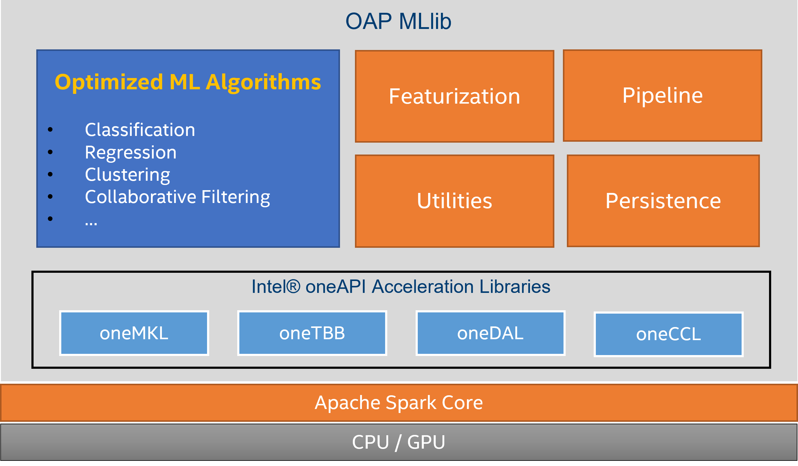

Introduction
The Problem
Apache Spark MLlib is a scalable machine learning library based on Spark unified platform. It seamlessly integrates with Spark SQL, Spark Streaming and other machine learning and deep learning frameworks without additional glue code for the entire pipeline.
However, JVM-based MLlib only has limited use of BLAS acceleration and Spark shuffle is also slow for communication during distributed training. It doesn't fully utilize modern CPU and GPU capabilities to achieve best performance.
OAP MLlib Solution
OAP MLlib is a platform optimized package to accelerate machine learning algorithms in Apache Spark MLlib. It is compatible with Spark MLlib and leverages open source Intel® oneAPI Data Analytics Library (oneDAL) to provide highly optimized algorithms and get most out of CPU and GPU capabilities. It also take advantage of open source Intel® oneAPI Collective Communications Library (oneCCL) to provide efficient communication patterns in multi-node multi-GPU clusters.
Who will use OAP MLlib
This solution is intended for researchers, data scientists and enterprise users to accelerate their Spark MLlib algorithms with minimum configuration changes.
Architecture
The following diagram shows the high-level architecture of OAP MLlib.

OAP MLlib maintains the same API interfaces with Spark MLlib. That means the application built with Spark MLlib can be running directly with minimum configuration.
Most of the algorithms can produce the same results that are identical with Spark MLlib. However due to the nature of distributed float point operations, there may be some small deviation from the original result, we will make sure the error is within acceptable range and the accuracy is on par with Spark MLlib.
For those algorithms that are not accelerated by OAP MLlib, the original Spark MLlib one will be used.
Getting Started
Java/Scala Users Preferred
Use a pre-built OAP MLlib JAR to get started, you can download OAP MLlib JAR from Release Page.
Then you can refer to the following Running section to try out.
Python/PySpark Users Preferred
Use a pre-built JAR to get started. If you have finished OAP Installation Guide, you can find compiled OAP MLlib JAR oap-mllib-x.x.x.jar in $HOME/miniconda2/envs/oapenv/oap_jars/.
Then you can refer to the following Running section to try out.
Building From Scratch
You can also build the package from source code, please refer to Building Code section.
Running
Supported Spark Versions
OAP MLlib's latest version supports multiple Spark versions as below.
- Apache Spark 3.1.1
- Apache Spark 3.1.2
- Apache Spark 3.1.3
- Apache Spark 3.2.0
- Apache Spark 3.2.1
Prerequisites
- CentOS 7.0+, Ubuntu 18.04 LTS+
- Java JRE 8.0+ Runtime
- Apache Spark 3.1.1, 3.1.2, 3.1.3, 3.2.0 or 3.2.1
Generally, our common system requirements are the same with Intel® oneAPI Toolkit, please refer to Intel® oneAPI Base Toolkit System Requirements for details.
Intel® oneAPI Toolkits components used by the project are already included into JAR package mentioned above. There are no extra installations for cluster nodes.
Spark Configuration
General Configuration
YARN Cluster Manager
Users usually run Spark application on YARN with client mode. In that case, you only need to add the following configurations in spark-defaults.conf or in spark-submit command line before running.
# absolute path of the jar for uploading
spark.files /path/to/oap-mllib-x.x.x.jar
# absolute path of the jar for driver class path
spark.driver.extraClassPath /path/to/oap-mllib-x.x.x.jar
# relative path of the jar for executor class path
spark.executor.extraClassPath ./oap-mllib-x.x.x.jar
Standalone Cluster Manager
For standalone cluster manager, you need to upload the jar to every node or use shared network folder and then specify absolute paths for extraClassPath.
# absolute path of the jar for driver class path
spark.driver.extraClassPath /path/to/oap-mllib-x.x.x.jar
# absolute path of the jar for executor class path
spark.executor.extraClassPath /path/to/oap-mllib-x.x.x.jar
OAP MLlib Specific Configuration
OAP MLlib adopted oneDAL as implementation backend. oneDAL requires enough native memory allocated for each executor. For large dataset, depending on algorithms, you may need to tune spark.executor.memoryOverhead to allocate enough native memory. Setting this value to larger than dataset size / executor number is a good starting point.
OAP MLlib expects 1 executor acts as 1 oneCCL rank for compute. As spark.shuffle.reduceLocality.enabled option is true by default, when the dataset is not evenly distributed accross executors, this option may result in assigning more than 1 rank to single executor and task failing. The error could be fixed by setting spark.shuffle.reduceLocality.enabled to false.
Sanity Check
Setup env.sh
$ cd conf
$ cp env.sh.template env.sh
Edit related variables in "Minimun Settings" of env.sh
Upload example data files to HDFS
$ cd examples
$ hadoop fs -copyFromLocal data /
$ hadoop fs -ls data
Run K-means
$ cd examples/kmeans
$ ./build.sh
$ ./run.sh
PySpark Support
As PySpark-based applications call their Scala counterparts, they shall be supported out-of-box. Examples can be found in the Examples section.
Building Code
Prerequisites
We use Apache Maven to manage and build source code. The following tools and libraries are also needed to build OAP MLlib:
- JDK 8.0+
- Apache Maven 3.6.2+
- GNU GCC 7+
- Intel® oneAPI Base Toolkit (>=2022.1) Components :
- DPC++/C++ Compiler (dpcpp/clang++)
- Data Analytics Library (oneDAL)
- Threading Building Blocks (oneTBB)
- MPI Library (MPI)
- Collective Communications Library (oneCCL)]
Generally you only need to install Intel® oneAPI Base Toolkit for Linux with all or selected components mentioned above. Intel® oneAPI Base Toolkit can be downloaded and installed from here. Installation process for oneAPI using Package Managers (YUM (DNF), APT, and ZYPPER) is also available. More details about oneAPI can be found here.
Scala and Java dependency descriptions are already included in Maven POM file.
Note: You can refer to this script to install correct dependencies.
Build
To clone and checkout source code, run the following commands:
$ git clone https://github.com/oap-project/oap-mllib.git
Optional to checkout specific release branch:
$ cd oap-mllib && git checkout ${version}
We rely on environment variables to find required toolchains and libraries. Please make sure the following environment variables are set for building:
| Environment | Description |
|---|---|
| JAVA_HOME | Path to JDK home directory |
| DAALROOT | Path to oneDAL home directory |
| TBB_ROOT | Path to oneTBB home directory |
| I_MPI_ROOT | Path to Intel MPI home directory |
| CCL_ROOT | Path to oneCCL home directory |
We suggest you to source setvars.sh script into current shell to setup building environments as following:
$ source /opt/intel/oneapi/setvars.sh
You can also refer to this CI script to setup the building environments.
If you prefer to buid your own open source oneDAL, oneTBB, oneCCL versions rather than use the ones included in oneAPI Base Toolkit, you can refer to the related build instructions and manually source setvars.sh accordingly.
To build, run the following commands:
$ cd mllib-dal
$ ../dev/prepare-build-deps.sh
$ ./build.sh
The built JAR package will be placed in target directory with the name oap-mllib-x.x.x.jar.
Examples
Scala Examples
| Example | Description |
|---|---|
| kmeans | K-means example for Scala |
| pca | PCA example for Scala |
| als | ALS example for Scala |
| naive-bayes | Naive Bayes example for Scala |
| linear-regression | Linear Regression example for Scala |
| correlation | Correlation example for Scala |
| summarizer | Summarizer example for Scala |
Python Examples
| Example | Description |
|---|---|
| kmeans-pyspark | K-means example for PySpark |
| pca-pyspark | PCA example for PySpark |
| als-pyspark | ALS example for PySpark |
List of Accelerated Algorithms
| Algorithm | CPU | GPU |
|---|---|---|
| K-Means | X | X |
| PCA | X | X |
| ALS | X | |
| Naive Bayes | X | |
| Linear Regression | X | |
| Ridge Regression | X | |
| Correlation | X | X |
| Summarizer | X | X |